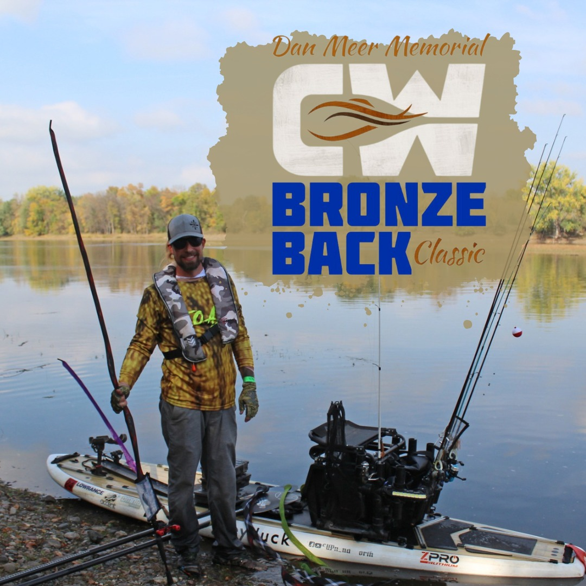

Saturday, September 26, 2026

Thanks for the GREAT turnout in 2025!
There were 279 Smallmouth Bass caught by 50 anglers! The biggest catch was 21.75"!
This is a Catch - Measure - Photo - Release Tournament. Registration opens 8-10 weeks prior to the tournament. Our newsletter subscribers are notified first before opening it up to the general public. One kayak will be given away in a random drawing! Cash & prize giveaways for participants!
Some of the prizes include, but are not limited to:
A New Fishing Kayak
Cold hard cash
Kayaking gear & equipment
Fishing tackle and gear
Gift Certificates and much more!
There will be prizes for at least the top 30 finishers and participation gifts for all anglers. Must be present to win!
FRIDAY (night before event):
5:30pm-7:00pm Check-In & Packet Pick-Up
Mandatory briefing and registration packet distribution.
SATURDAY:
7:15am-4:30pm Tournament (staggered start & finish)
4:00pm-5:30pm Food, Drink & Camaraderie
5:00pm-6:00pm Awards Ceremony
SUNDAY (day after event):
10:00am-6:00pm Demo Day at Clear Waters Outfitting
Free kayak demos, special deals, and open water time.
Limited capacity (50 anglers max). This event sells out annually. Prices increase Sept 1, 2026.
CWO Shuttle - $125 / $140 after 9/1/26
Self Shuttle - $110 / $125 after 9/1/26
No same-day registration available.
Real-time scoring via TourneyX.
Shuttle support and river logistics.
Participation gift for all anglers.
Awards ceremony + prizes + community event atmosphere.
Discounts on gear and demo access Sunday.
A beginner-friendly class where one of our staff will take you to Warner Lake for a 1.5 hour session, offering instruction to those who are new to Stand Up Paddle (SUP) boarding or want to improve their SUP boarding skills. Warner Lake is a small, non-motorized lake surrounded by park and is scenic, calm, and full of wildlife. The park's thick, surrounding woods and foliage keep the clean, clear water smooth throughout the year, providing a perfect location for learning SUP skills. The staff instructor will help make the transition into stand up paddle boarding easy and fun for a greater appreciation of this popular sport. This is a fantastic opportunity for a family or group to experience the fast-growing sport of SUP boarding in a safe, fun, and secluded environment.
The price of this class depends on the number of participants (max 8):
1.5 hour class for 1 - 3 people: $39/person
1.5 hour class for 4 - 8 people: $34/person
After arriving at the boat launch at Warner Lake at your scheduled arrival time, we will go over paperwork, talk about SUP board styles, water safety paddling techniques before you start practicing on the water. The group then has the allotted class time to learn and enjoy being on the water. Class content will be determined by group ability.
The art of practicing Yoga on a SUP board offers a greater challenge of balance and awareness than your normal yoga session. You will ebb & flow on high quality state of the art SUP yoga boards, balancing yin & yang, sun & moon, finding your natural rhythm within the fluctuations and cycles of the natural world. SUP Yoga can be easy stretching and breathing or a vigorously challenging Vinyasa flow. Occasionally, you’ll go into “Fallasana” pose or “falling off the board into the water” pose – and that’s awesome! Falling teaches us humility, persistence to face our fears, and to have a good time and laugh. Warner Lake is a small, non-motorized lake surrounded by park and is scenic, calm, and full of wildlife. The park's thick, surrounding woods and foliage keep the clean, clear water smooth throughout the year, providing a perfect location for doing SUP Yoga.
Max of 9 participants per class.
The price of this class: 1.25 hour class: $39/person
After arriving at the boat launch at Warner Lake at your scheduled arrival time, we will outfit the group with equipment, go over paperwork, and send you out on the lake with an experienced yoga instructor. The group then has the allotted class time to enjoy being on the water. Class content will be determined by group ability and style of yoga being practiced.
Join us for a unique experience that combines stand up paddle board yoga with the soothing vibrations of a sound bath. Class will begin with a brief introduction to paddle boarding with techniques and saftey along with a gentle yoga warm-up before finally experincing a meditative sound bath with crystal singing bowls, chimes, and drums, while you float peacfully on your SUP board.
The price of this class: 1 hour class: $38/person
This beginner session offers basic instruction and experience to help participants learn how to canoe. Class will take place at the calm and scenic waters of Warner Lake that is perfect for beginners. You can sign up with a partner or be paried with another paddler.
The price of this class: 1.5 hour class: $34/person
Come out and enjoy an evening of paddling. Never been in a canoe, kayak, or on a stand up paddle (SUP) Board? No problem. Basic instruction will be provided if needed. All equipment and life jackets will be supplied. You can arrive to class ready to have fun on the water. Children under age 16 must be accompanied by an adult. Children under 18 need a waiver signed by a parent.
The price of this class: 1.5 hour class: $34/person
After arriving at the boat launch at Warner Lake at your scheduled arrival time, we will outfit the group with equipment, go over paperwork, give any needed instruction, and help get you on the water. The group then has the allotted class time to enjoy being on the water. Class content will be determined by group ability.
A beginner-friendly class where one of our staff will take you to Warner Lake for a 3-hour session, offering instruction to those who are new to the sport or want to improve their kayaking skills.
NOTE: Students should progress to the full day Intro to Kayaking course for more guided on water practice time to develop advanced stroke, safety, and rescue techniques needed for wind, waves, and large bodies of water.
Warner Lake is a small, non-motorized lake surrounded by park and is scenic, calm, and full of wildlife. The park's thick, surrounding woods and foliage keep the clean, clear water smooth throughout the year, providing a perfect location for this class.
The price of this class depends on the number of participants:
3-hour class for 1 - 2 people: $79/person
3-hour class for 3 or more people: $63/person
*If you bring your own equipment deduct $15
After arriving at CW Outfitting at your scheduled arrival time, we will outfit you with equipment, go over paperwork, and shuttle you 2 miles down the road to Warner Lake. You will then have the allotted class time to learn and enjoy being on the water.
This course is designed as a 6-8 hr program emphasizing safety, enjoyment and skill acquisition for entry level individuals.
6-hour class for 1 - 2 people: $129/person
6-hour class for 3 or more people: $119/person
*If you bring your own equipment deduct $15
After arriving at CW Outfitting at your scheduled time, we will outfit the group with equipment, go over paper work, and shuttle you 2 miles down the road to Warner Lake. The group then has the allotted class time to learn and enjoy being on the water.